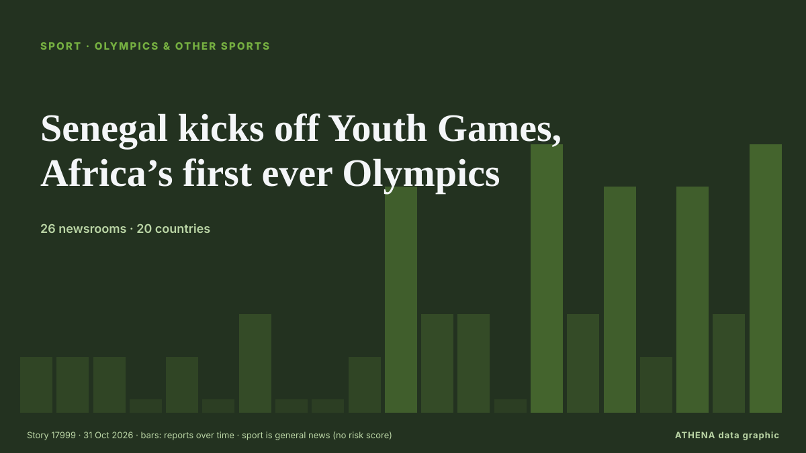

Senegal kicks off Youth Games, Africa’s first ever Olympics

Dakar is hosting around 2,665 young competitors aged 14 to 17 from around the world, who will compete in 25 sports and 153 medal events. de Free Malaysia Today
Relayé de façon indépendante par 26 médias dans 20 pays depuis le 21 oct. ; premier à l'annoncer : Africanews (English) ; la couverture faiblit. Sport et culture sont classés sans évaluation du risque. La confiance est de 92 % (élevée) : 26 médias indépendants le confirment, avec une fiabilité moyenne des sources de 76 %. Médias par pays : France (6), Nigeria (4), Oman (3). Couverture : du 21 oct. au 31 oct., 242 heures.
Ce qui a changé : 10 nouveaux articles de 9 rédactions dans les 24 heures jusqu'au 31 oct..
Premier titre : All you need to know about the Dakar 2026 Youth Olympics
Les titres sont affichés en anglais, tels que publiés.
En un coup d'œil
Sélectionné, noté et rédigé par la méthodologie publiée d'ATHENA. Aucun rédacteur n'intervient sur un événement en particulier. Comment il est produit ›
| 21 Oct 06:05 UTC | 1 |
|---|---|
| 21 Oct 18:05 UTC | 1 |
| 22 Oct 06:05 UTC | 1 |
| 22 Oct 18:05 UTC | 0 |
| 23 Oct 06:05 UTC | 1 |
| 23 Oct 18:05 UTC | 0 |
| 24 Oct 06:05 UTC | 2 |
| 24 Oct 18:05 UTC | 0 |
| 25 Oct 06:05 UTC | 0 |
| 25 Oct 18:05 UTC | 1 |
| 26 Oct 06:05 UTC | 5 |
| 26 Oct 18:05 UTC | 2 |
| 27 Oct 06:05 UTC | 2 |
| 27 Oct 18:05 UTC | 0 |
| 28 Oct 06:05 UTC | 6 |
| 28 Oct 18:05 UTC | 2 |
| 29 Oct 06:05 UTC | 5 |
| 29 Oct 18:05 UTC | 1 |
| 30 Oct 06:05 UTC | 5 |
| 30 Oct 18:05 UTC | 3 |
| 31 Oct 06:05 UTC | 6 |
Pourquoi ces chiffres
Importance
Risque
Confiance
La couverture : qui l'a annoncé, et quand
titre tel que publié · ouvre l'original- Africanews (English) · AFRSenegalese workers protest rising living costs ahead of three-day general strike
- RFI English · FranceSenegal unions press on with general strike days before Youth Olympics
- AllAfrica · AFRSenegal: General Strike Continues Amid Protests Against New Labour Laws
- France 24 English · FranceOlympic fever grips Senegal as Dakar hosts Youth Olympic Games
- Radio Tamazuj · Soudan du SudSouth Sudanese youth going to Dakar Olympics pledge peace
- MyJoyOnline · GhanaQatar supports Senegal’s preparations for Dakar 2026 Youth Olympic Games
- Oman Observer · OmanSenegal to host Youth Games, Africa's first ever Olympics
- Asharq Al-Awsat (English) · Arabie saouditeSenegal to Host Youth Games, Africa's First Ever Olympics
- BBC News · Royaume-UniAll you need to know about the Dakar 2026 Youth Olympics
- Nile Post · OugandaAll you need to know about the Dakar 2026 Youth Olympics
- RFI English · FranceSenegal PM vows to address economic issues as 2026 Youth Olympics Games loom
- Africanews (English) · AFRDakar prepares to host the 2026, Youth Olympics Africa’s first Olympic event
- Express Tribune · PakistanSenegal to host Youth Games
- News of Bahrain · BahreïnBahrain Name Four Athletes for Dakar Youth Olympics
- Africanews (English) · AFRIOC president arrives in Senegal ahead of the Youth Olympic Games
- Africanews (English) · AFRQatar sends 15 buses to Senegal ahead of Dakar 2026 Youth Olympics
- Premium Times · NigeriaYouth Olympics: Nigeria names 19 athletes for Dakar 2026
- DW English · AllemagneAfrica's first Youth Olympics open in Senegal amid hope and scrutiny
- AllAfrica · AFRSenegal: Senegal's Youth Olympics' Welcome Should Include Everyone
- Greek City Times · GrèceFirst Greek Olympic Youth Team Departs For Youth Olympics
- Oman Observer · OmanOman athletes all set for Dakar 2026 Youth Olympic Games
- People Daily · KenyaMediamax secures exclusive media rights for Dakar 2026 Youth Olympic Games in Kenya
- Punch · NigeriaNOC president Gumel backs Youth Olympics contingent
- News of Bahrain · BahreïnBahrain Name Four Athletes for Dakar 2026 Youth Olympic Games
- France 24 English · FranceKenya's female athletes make their mark as Youth Olympic Games approach
- BelTA (English) — page reader · Biélorussie15:20 Belarus names seven athletes for Youth Olympics in Dakar Sport
- Oman Observer · OmanHamed targets strong debut at Dakar 2026 Youth Olympics
- CGTN (World) · ChineAfrica Watch: Dakar 2026: Africa’s Olympic Moment?
- CNA (Channel NewsAsia) · SingapourAfrica ready for Olympic debut with Dakar Youth Games
- Free Malaysia Today · MalaisieAfrica ready for Olympic debut with Dakar Youth Games
- RFI English · FranceEverything you need to know about the Youth Olympic Games in Senegal
- Xinhua (English) — page reader · ChineXi's special envoy to attend opening ceremony of 4th Youth Olympic Games in Dakar
- France 24 English · FranceSenegal gears up for historic 2026 Youth Olympic Games in Dakar
- Africanews (English) · AFRSenegal gears up for a historic Dakar 2026 Youth Olympics
- CGTN (World) · ChineAfrica ready for Olympic debut with Dakar Youth Games
- News of Bahrain · BahreïnBahrain Send Four Athletes to Dakar 2026 Youth Olympic Games
- Free Malaysia Today · MalaisieSenegal kicks off Youth Games, Africa’s first ever Olympics
- TRT World · TurquieDakar hosts Africa's first Olympic event
- Vanguard · NigeriaSenegal kicks off Youth Games, Africa’s first ever Olympics
- Punch · NigeriaSenegal kicks off Youth Games, Africa’s first ever Olympics